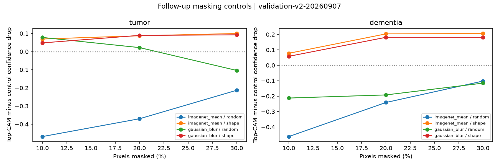
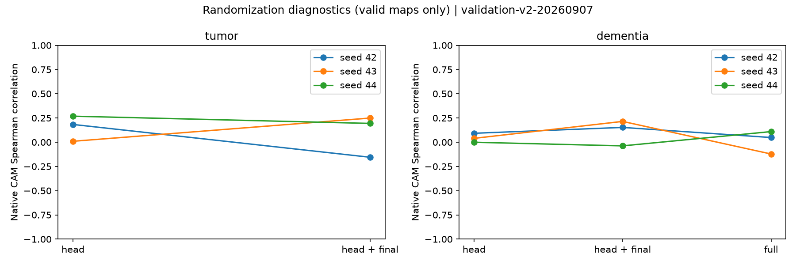
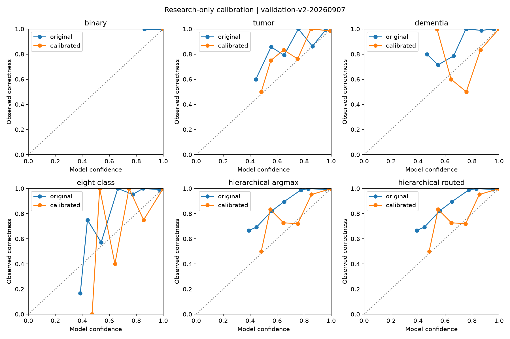

validation-v2-20260907
Internal public-image benchmark; no anatomical validation, patient independence or external validation established.
Results and limitations · Mentor memo · One-page PDF memo · Fixed gallery · Captions


